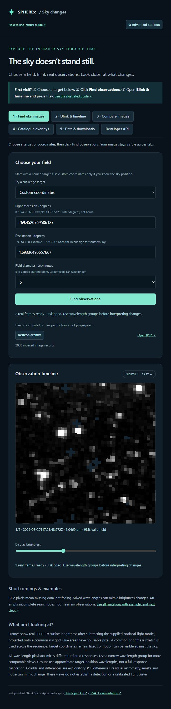
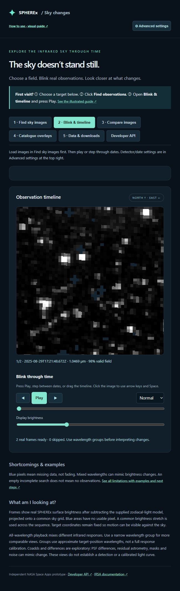
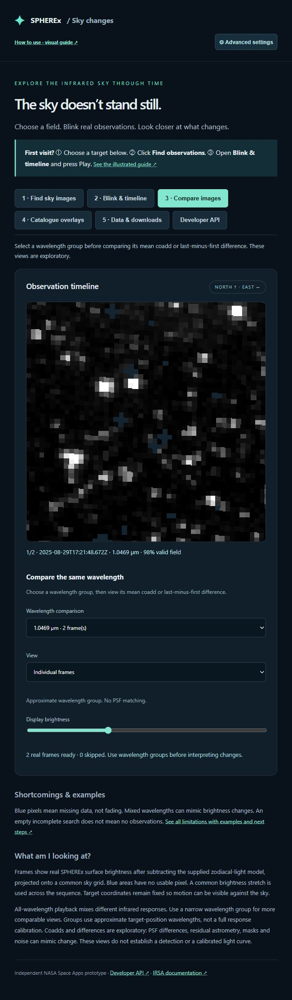
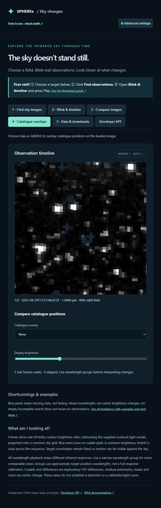
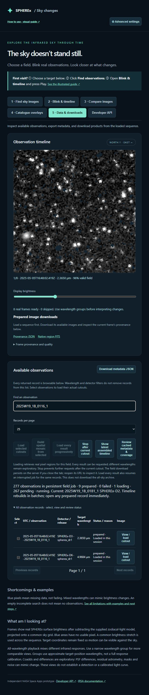
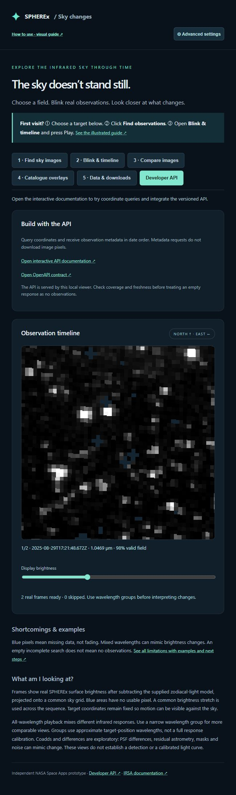
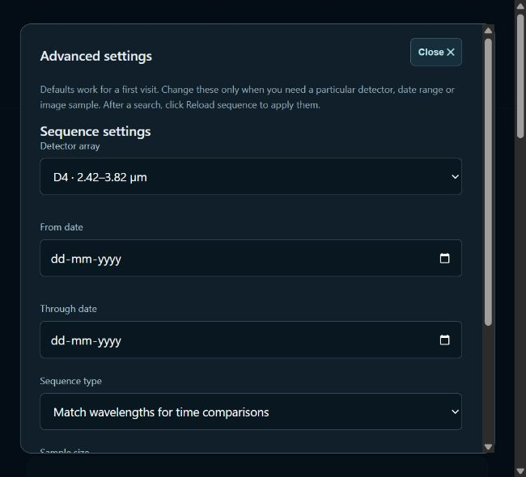

Your first sky sequence
Default: archive IMAGE
The viewer now displays calibrated SPHEREx IMAGE pixels without zodiacal subtraction, quality-flag masking or additional PSF/ePSF processing. Sky alignment and common display contrast remain. Existing analysis products are preserved; choose them explicitly under Advanced settings → Image source if you need coadds, differences or spatial mosaics.
Flagged artifacts can be visible in this unmasked view. Archive IMAGE is already calibrated, not unprocessed detector telemetry.
Choose a target → Find observations → Blink & timeline → Play. The pictures show the tab locations. Data & downloads includes pagination, per-record loading and spatial mosaics. They use a real cached Barnard’s Star sequence; your field and dates may differ.
1 · Find sky images
Start here: choose a target → click Find observations.

- Target
- Pick a named challenge target. Custom coordinates enable your own field.
- Right ascension / declination
- Enter ICRS degrees: RA is 0 up to but excluding 360; declination is −90 to +90. Example: 133.795129, −7.245147. RA in hours must be converted to degrees (hours × 15).
- Field diameter
- Start at 5 arcminutes. A larger circle helps follow fast motion but costs more transfer time.
- Find observations
- Search metadata and load a representative real-image sequence. A new field may take minutes.
- Refresh archive / Open IRSA
- Refresh asks for newer metadata; IRSA opens the original archive.
2 · Blink & timeline
After images load: open this tab → press Play.

- Previous / Next
- Step one observation at a time. The date and wavelength appear beneath the image.
- Play / Speed
- Play or pause. Slow, Normal and Fast change animation speed, not observation dates.
- Timeline
- Drag to another sampled epoch. Click the image for arrow-key stepping or Space to play.
- Brightness
- Adjust display brightness only; this does not change measured flux.
3 · Compare images
Select a wavelength group → choose a comparison view.

- Wavelength comparison
- Choose a narrow group with two or more frames for a time comparison. All sampled wavelengths mixes infrared responses.
- Individual frames
- Show one epoch at a time.
- Group mean coadd
- Average the selected group to inspect common structure.
- Last minus first
- Subtract earliest from latest. Middle gray is zero. Residuals require investigation and do not prove a moving object.
4 · Catalogue overlays
Load images → choose Gaia or AllWISE.

- Gaia DR3
- Draw catalogue markers with approximate proper-motion adjustment when values exist.
- AllWISE
- Draw fixed catalogue positions. Old positions may differ from SPHEREx epochs.
- None
- Remove markers. Overlays are catalogue positions, not telescope image layers.
5 · Data & downloads
Inspect the observations and save evidence.

- Metadata JSON
- Export the searched observation metadata. All returned records are paginated. Search by observation, detector, release or status; select records and load cutouts, load every result progressively, or build a same-detector/release spatial mosaic. Partial coverage and failures remain explicit.
- Provenance JSON
- Download the prepared sequence description and processing provenance.
- Native region FITS
- Download the current frame’s available native region for analysis.
- Blink GIF
- Download animation for a wavelength group when prepared.
- Frame provenance and quality
- Expand to inspect the current frame’s metadata and usable-pixel fraction.
Developer API
Open interactive documentation → try a metadata-only coordinate request.

- Interactive documentation
- Includes an executable saved-metadata query and integration examples.
- OpenAPI contract
- Machine-readable API routes, parameters and errors.
- Metadata versus pixels
- GET observations lists indexed overlapping products; explicit sequence POST prepares selected regions. Check coverage/freshness. Local service is not publicly hosted.
Advanced settings · top right
Click ⚙ Advanced settings. Defaults are suitable for starting.

- Detector array
- D1: 0.75–1.09; D2: 1.10–1.62; D3: 1.63–2.41; D4: 2.42–3.82; D5: 3.83–4.41; D6: 4.42–5.00 µm. Detector selection alone does not match wavelengths.
- From / Through date
- Optional calendar dates, including the through day. Through must be on or after From. Leave both empty for all available dates.
- Sequence type
- All selected observations are retained. Wavelength groups help organize comparisons; mixed wavelengths can produce spectral effects rather than temporal changes.
- Sample size
- 6, 12 or 24 observations for the initial progressive load. Every returned record remains independently selectable, and Load every result progressively requests them all. Each failure is recorded; wavelength grouping does not discard records.
- Reload sequence
- After a search, apply these settings. Preparation may retrieve selected pixel regions. Close or Escape exits without reloading; edited values remain selected.
When an input is wrong
The viewer shows a correction message and marks invalid fields. For example, RA = 360 is outside the accepted range; use a value below 360. A Through date earlier than From is rejected inside Advanced settings. No search or sequence preparation starts until those settings are corrected.
How a 10′ field is generated
10′ is a diameter of 1/6 degree (radius 5′). We retrieve real native pixels for your coordinates and project them onto a fixed sky grid; we do not enlarge a cached 5′ picture. Any numeric diameter from 1′ to 60′ is supported. Output sampling does not improve the telescope’s native resolution.
A single exposure may cover all or only part of that grid. Missing pixels stay blue. For coverage spanning exposures, select same-detector/release records and request a spatial mosaic. The mosaic combines valid overlapping pixels and retains its source list and coverage counts. It is explicitly exploratory when dates or local wavelengths differ.
Load every result progressively creates a persistent server job. Reopening its URL reconnects to it; Stop finishes the current cutout and stops further requests. After a server restart, use the same action to explicitly resume. During loading, timelines rebuild in batches with a common brightness stretch; any individually prepared record can be opened immediately.
Shortcomings, examples and what to do
These views help explore real observations. They do not establish a scientific discovery.
| Limitation | Example | What to do / current boundary |
|---|---|---|
| Incomplete regional index | A new sky position may return no saved rows and incomplete coverage. This means unknown coverage, not that no observations exist. | Check the coverage notice; retry an archive query when available. |
| Archive timeout or stale cache | IRSA may time out or return HTTP 502. Old observations can remain available without including a new release. | Read the warning and refresh later; no success is inferred from cached rows. |
| First-time preparation is slow | A cached Barnard sequence reopens quickly, while a new field requires selected cutouts and alignment. | Start with a 5′ field and a small sample. Metadata-query latency is not image-preparation latency. |
| Sample is not exhaustive | Requesting 12 candidates may yield only two matched usable frames. | Read frame/skipped counts; do not treat sample counts as independent complete epochs. |
| Wavelength and image-shape differences | A stationary star can look brighter at another infrared wavelength, or leave residuals after imperfect alignment/PSF differences. | Use matched groups. Coadds/differences remain exploratory; PSF matching is not implemented. |
| Fixed target coordinates | Fast-moving WISE0855 may leave a 1′ field over a long date range. | Try a larger field; automatic target-motion tracking is not implemented. |
| Masked or missing pixels | A source moves into a blue region and appears to disappear. | Blue means no usable pixel, not measured fading. |
| Catalogue positions differ by epoch | An AllWISE marker can be offset from a newer SPHEREx source. | Investigate motion and catalogue uncertainties; markers alone do not establish identity. |
| No calibrated light curves or spectra | A bright difference patch does not give a validated variability amplitude or discovery. | Download FITS/provenance for further analysis. On-demand spectra and validated detection measurements are not implemented. |
| Local deployment and partial performance evidence | A collaborator cannot call your localhost API from their own computer. Cached localhost timings do not predict internet speed. | Public hosting is not enabled. Cold image, concurrent-user and hosted latency remain unmeasured. |